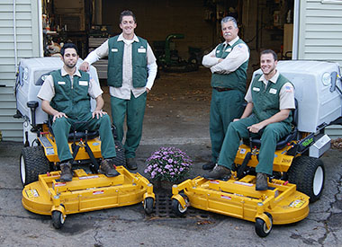

The History of Norwood Landscape
Norwood Landscape was founded in 1979 by Gerald (Jerry) Norwood as a part-time landscape maintenance company. Over the next four years Jerry worked non-stop nights and weekends growing his business. By 1983 he had developed great working relationships with enough customers to leave his full-time job at Gillette and pursue his dream of running his own company. Almost twenty five years later and many more relationships, Norwood Landscape has become one of the longest tenured landscape companies in the Brockton area.
With the help of his son Mark, Norwood Landscape remains family owned and operated. As a result of our length of time in business we have been able to attract some of the finest landscape professionals in the industry. We have spent many years building this special team to ensure that Norwood Landscape will continue to provide exceptional service for many years to come.
Whether it's year round landscape management or a one-time clean up, our goal is that every customer is extremely satisfied. We work with both commercial and residential customers of all sizes. We are committed to working together with our customers every step of the way from start to finish. Each job is assigned a project manager responsible for walking you through the project prior to completion.
If you are looking for a landscape company designed to work with you and give you exactly what you want, Norwood Landscape is the answer. Contact one of our landscape professionals today and experience the difference. We look forward to working with you.